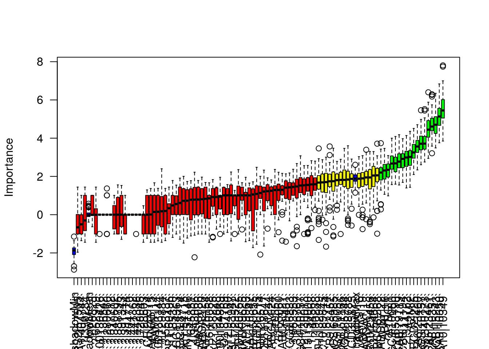

Przegląd metod klasyfikacji binarnej
pg-Rworkshop-2016
Warsztaty z R dla średniozaawansowanych na Politechnice Gdańskiej
- Organizatorzy: Paweł Cejrowski, Naukowe Koło Matematyki
- Prowadzący: Marcin Kosiński
Strona warsztatu http://grupawp.github.io/pg-Rworkshop-2016/
Ramowy plan warsztatu
- 9:00-9:15/9:20 - [Prezentacja] Paweł Cejrowski - Istota Data Science
- 9:20-9:40 - [Prezentacja] Marcin Kosiński - Po co przyszliśmy na warsztat: co wiemy o R i analizie danych?
- 9:40-10:00 - [Prezentacja/Life-coding] Marcin Kosiński - Omówienie danych wraz z ich przygotowaniem w
dplyr - 10:00-10:30 - [Prezentacja/Life-coding] Marcin Kosiński - Omówienie podstaw uczenia statystycznego na przykładzie klasyfikacji wykorzystującej podstawowy algorytm na danych wybranych do warsztatu.
- 10:30-10:35 - Omówienie przygotowanych materiałów
- 10:35-12:00 - Praca w zespołach nad analiza danych i klasyfikacją z wykorzystanie algorytmów omówionych w przygotowanych materiałach. Prośba o prowadzenie analizy w plikach
.Rmd. 6 pięcioosobowych zespołów. - 12:00-12:30 - [Prezentacja zespołów] - PIZZA, w trakcie której zespoły opowiedzą [każdy zespół 5 min]:
- jaki algorytm wybrały
- na czym polega algorytm
- jakie są postępy
- jakie zmienne wybrano do analizy
- jakie są dalsze plany na anlizę
- 12:30-13:45 - Praca w zespołach nad analiza danych i klasyfikacją z wykorzystanie algorytmów omówionych w przygotowanych materiałach. Prośba o prowadzenie analizy w plikach
.Rmd. 6 pięcioosobowych zespołów. - 13:45-14:00 - Ostateczne 2minutowe prezentacje + sklejenie plików
.Rmdw jedną stronę HTML. - 14:00-14:15 - Zakończenie warsztatu i konsultacje.
Proponowane zbiory danych - ostatecznie zostaniemy przy jednym
- Internet Advertisements Data Set - This dataset represents a set of possible advertisements on Internet pages. The features encode the geometry of the image (if available) as well as phrases occuring in the URL, the image’s URL and alt text, the anchor text, and words occuring near the anchor text. The task is to predict whether an image is an advertisement (“ad”) or not (“nonad”). Wymiary: 3279 X 1558
- Multiple Features Data Set - This dataset consists of features of handwritten numerals (
0'--9’) extracted from a collection of Dutch utility maps. 200 patterns per class (for a total of 2,000 patterns) have been digitized in binary images. Wymiary: 2000 X 649 - p53 Mutants Data Set - Biophysical models of mutant p53 proteins yield features which can be used to predict p53 transcriptional activity. All class labels are determined via in vivo assays. Wymiary: 16772 X 5409
- The Cancer Genome Atlas Project Data - Breast Cancer - Clinical information, genes mutations and expressions for patients suffering from Breast Carcinoma. Wymiary: ~900 X ~22 tysiące
- Free data set for very high dimensional classification - stackoverflow propositions
Omówienie danych - przegląd pakietu dplyr
library(dplyr)
# devtools::install_github('hadley/dplyr')Dodatkowe materiały
RTCGA
source("https://bioconductor.org/biocLite.R")
biocLite('RTCGA.rnaseq')
biocLite('RTCGA.clinical')
biocLite('RTCGA.mutations')The Cancer Genome Atlas (TCGA) is a comprehensive and coordinated effort to accelerate our understanding of the molecular basis of cancer through the application of genome analysis technologies, including large-scale genome sequencing.
library(RTCGA.rnaseq); data(BRCA.rnaseq) # information about genes' expressions
library(RTCGA.mutations); data(BRCA.mutations) # information about genes' mutations
library(RTCGA.clinical); data(BRCA.clinical) # patients' clinical data
BRCA.rnaseq %>%
select(`TP53|7157`, bcr_patient_barcode) %>%
# bcr_patient_barcode contains a key to merge patients between various datasets
rename(TP53 = `TP53|7157`) %>%
filter(substr(bcr_patient_barcode, 14, 15) == "01" ) %>%
# 01 at the 14-15th position tells these are cancer sample
mutate(bcr_patient_barcode = substr(as.character(bcr_patient_barcode),1,12)) ->
# in clinical info bcr_patient_barcode is only of length 12
BRCA.rnaseq.TP53
BRCA.mutations %>%
select(Hugo_Symbol, bcr_patient_barcode) %>%
# Hugo_symbol tells to which gene the row corresponds.
# Ff the rows exist for a gene, this means there was a mutation
# for this patient for this gene.
filter(nchar(bcr_patient_barcode)==15) %>%
# sometime there are inproper lengths of this code
filter(substr(bcr_patient_barcode, 14, 15)=="01") %>%
# 01 at the 14-15th position tells these are cancer sample
filter(Hugo_Symbol == 'PIK3CA') %>%
# we are interested only in the mutations of PIK3CA
unique() %>%
# sometimes there are few mutations in the same gene
mutate(bcr_patient_barcode = substr(as.character(bcr_patient_barcode),1,12)) ->
# in clinical info bcr_patient_barcode is only of length 12
BRCA.mutations.PIK3CA
BRCA.clinical %>%
select(patient.bcr_patient_barcode,
patient.vital_status, # information whether patient is still alive
patient.days_to_last_followup, # how many days has patient been observed if he is alive
patient.days_to_death) %>% # how many days has patient been observed if he has passed away
mutate(bcr_patient_barcode = toupper(as.character(patient.bcr_patient_barcode))) %>%
# in clinical datasets the key column is in lower case and with different name
mutate(status = ifelse(as.character(patient.vital_status) == "dead",1,0),
times = ifelse(
!is.na(patient.days_to_last_followup),
as.numeric(as.character(patient.days_to_last_followup)),
as.numeric(as.character(patient.days_to_death))
)) %>%
# if the patient does not have a days_to_last_followup time this means
# he has days_to_death time
mutate(times = as.numeric(times)) %>%
filter(!is.na(times)) %>%
# sometime patient does not have any time
filter(times > 0) -> BRCA.clinical.survival
# sometimes by mistkae patients have non-positive times (few cases)
BRCA.rnaseq.TP53 %>%
left_join(y = BRCA.mutations.PIK3CA,
by = "bcr_patient_barcode") %>%
left_join(y = BRCA.clinical.survival,
by = "bcr_patient_barcode") %>%
mutate(TP53_HighExpr = ifelse(TP53 >= median(TP53), "1", "0")) %>%
mutate(PIK3CA_Mut = as.integer(!is.na(Hugo_Symbol))) %>%
select(times, status, TP53_HighExpr, PIK3CA_Mut) %>%
filter(!is.na(status)) -> BRCA.2survfit
dim(BRCA.2survfit)## [1] 1040 4BRCA.2survfit %>%
group_by(TP53_HighExpr, PIK3CA_Mut, status) %>%
summarise(counts = n()) %>%
arrange(desc(counts))## Source: local data frame [8 x 4]
## Groups: TP53_HighExpr, PIK3CA_Mut [4]
##
## TP53_HighExpr PIK3CA_Mut status counts
## (chr) (int) (dbl) (int)
## 1 0 0 0 359
## 2 0 0 1 35
## 3 0 1 0 118
## 4 0 1 1 9
## 5 1 0 0 298
## 6 1 0 1 47
## 7 1 1 0 161
## 8 1 1 1 13BRCA.2survfit %>%
group_by(TP53_HighExpr, PIK3CA_Mut) %>%
summarize(min = min(times),
median = median(times),
mean = mean(times),
max = max(times)) -> agr_stats
library(tidyr)
agr_stats %>%
select(-PIK3CA_Mut) %>%
top_n(1, max) %>%
gather(TP53_HighExpr) -> agr_stats_2viz
names(agr_stats_2viz)[2:3] <- c("statistics", "value")
library(ggplot2)
agr_stats_2viz %>%
ggplot(aes(statistics, value, group =TP53_HighExpr, col = TP53_HighExpr)) +
geom_line() +
theme_RTCGA()
library(survminer)
library(survival)
fit <- survfit(Surv(times, status) ~ TP53_HighExpr + PIK3CA_Mut,
data = BRCA.2survfit)
ggsurvplot(fit, theme = theme_RTCGA(), p.val = TRUE, risk.table = TRUE,
risk.table.y.text.col = TRUE, risk.table.y.text = FALSE)## Warning in if (value %in% columns) {: the condition has length > 1 and only
## the first element will be used
Internet Advertisements Data Set
This dataset represents a set of possible advertisements on Internet pages. The features encode the geometry of the image (if available) as well as phrases occuring in the URL, the image’s URL and alt text, the anchor text, and words occuring near the anchor text. The task is to predict whether an image is an advertisement (“ad”) or not (“nonad”).
Wymiary: 3279 X 1558
ad <- read.csv("~/pg-Rworkshop-2016/dane/ad.data", header=FALSE,stringsAsFactors = FALSE)
ad[ad == " ?"] <- 0
for(i in 1:ncol(ad)){
gsub(" ", "", ad[, i]) %>%
as.character() %>%
as.numeric() -> ad[, i]
}
ad %>%
summarise_each(funs(mean)) %>%
.[, 1:6]Selekcja zmiennych - kilka przykładów
FSelector - information.gain
library(RTCGA.rnaseq)
library(dplyr)
BRCA.rnaseq %>%
mutate(bcr_patient_barcode = substr(bcr_patient_barcode, 14, 14)) -> BRCA.rnaseq.tumor
BRCA.rnaseq.tumor.first<-BRCA.rnaseq.tumor[, 1:1000]
(sum(BRCA.rnaseq.tumor.first$bcr_patient_barcode==0)) #1100 guz ## [1] 1100(sum(BRCA.rnaseq.tumor.first$bcr_patient_barcode==1)) #112 zdrowy## [1] 112library(FSelector)
information.gain(formula =bcr_patient_barcode~., data = BRCA.rnaseq.tumor.first)->wynik.info
wynik.info %>%
mutate(nazwy = row.names(wynik.info)) %>%
arrange(desc(attr_importance)) -> wyniki.po.info
(subset<- cutoff.biggest.diff(wynik.info))## [1] "ADAMTS5|11096" "ARHGAP20|57569"(subset) ##geny o najbardziej wyróżniającym się wskaźniku attr_imprortance## [1] "ADAMTS5|11096" "ARHGAP20|57569"(subset11<-cutoff.k(wynik.info,10))## [1] "ADAMTS5|11096" "ARHGAP20|57569" "ABCA10|10349" "ABCA9|10350"
## [5] "ALDH1A2|8854" "ABCA8|10351" "ADRB2|154" "ABCA6|23460"
## [9] "ANKRD29|147463" "AQP7P1|375719"Boruta - Boruta
library(Boruta)
invisible(
Boruta_model <- Boruta(as.factor(bcr_patient_barcode)~.,
data = BRCA.rnaseq.tumor.first[,1:100],
doTrace =2, ntree = 50)
)## 1. run of importance source...## 2. run of importance source...## 3. run of importance source...## 4. run of importance source...## 5. run of importance source...## 6. run of importance source...## 7. run of importance source...## 8. run of importance source...## 9. run of importance source...## 10. run of importance source...## 11. run of importance source...## 12. run of importance source...## 13. run of importance source...## 14. run of importance source...## Confirmed 12 attributes: `A2M|2`, `AADACL2|344752`, `AASS|10157`, `ABCA10|10349`, `ABCA5|23461` and 7 more.## Rejected 39 attributes: `?|100130426`, `?|100133144`, `?|136542`, `?|26823`, `?|280660` and 34 more.## 15. run of importance source...## 16. run of importance source...## 17. run of importance source...## 18. run of importance source...## Rejected 6 attributes: `?|100134869`, `?|729884`, `?|8225`, `A2BP1|54715`, `ABCC11|85320` and 1 more.## 19. run of importance source...## 20. run of importance source...## 21. run of importance source...## 22. run of importance source...## Rejected 5 attributes: `AATF|26574`, `ABCA2|20`, `ABCB11|8647`, `ABCC2|1244`, `ABCD1|215`.## 23. run of importance source...## 24. run of importance source...## 25. run of importance source...## Confirmed 3 attributes: `AAGAB|79719`, `ABCB8|11194`, `ABCC6P1|653190`.## Rejected 1 attributes: `AADACL4|343066`.## 26. run of importance source...## 27. run of importance source...## 28. run of importance source...## Rejected 4 attributes: `?|653553`, `A4GALT|53947`, `ABCA3|21`, `ABCC8|6833`.## 29. run of importance source...## 30. run of importance source...## 31. run of importance source...## Rejected 4 attributes: `?|10357`, `?|155060`, `AARSD1|80755`, `ABCC6P2|730013`.## 32. run of importance source...## 33. run of importance source...## 34. run of importance source...## 35. run of importance source...## 36. run of importance source...## 37. run of importance source...## Confirmed 1 attributes: `ABCB7|22`.## Rejected 1 attributes: `?|10431`.## 38. run of importance source...## 39. run of importance source...## 40. run of importance source...## 41. run of importance source...## 42. run of importance source...## 43. run of importance source...## 44. run of importance source...## 45. run of importance source...## 46. run of importance source...## 47. run of importance source...## 48. run of importance source...## 49. run of importance source...## 50. run of importance source...## 51. run of importance source...## Rejected 1 attributes: `AADACL3|126767`.## 52. run of importance source...## 53. run of importance source...## 54. run of importance source...## 55. run of importance source...## 56. run of importance source...## 57. run of importance source...## 58. run of importance source...## 59. run of importance source...## 60. run of importance source...## 61. run of importance source...## 62. run of importance source...## 63. run of importance source...## 64. run of importance source...## 65. run of importance source...## 66. run of importance source...## 67. run of importance source...## Confirmed 1 attributes: `ABAT|18`.## 68. run of importance source...## 69. run of importance source...## 70. run of importance source...## 71. run of importance source...## 72. run of importance source...## 73. run of importance source...## Confirmed 1 attributes: `A1BG|1`.## Rejected 1 attributes: `ABCC4|10257`.## 74. run of importance source...## 75. run of importance source...## 76. run of importance source...## 77. run of importance source...## 78. run of importance source...## 79. run of importance source...## 80. run of importance source...## 81. run of importance source...## 82. run of importance source...## 83. run of importance source...## Rejected 1 attributes: `ABCC13|150000`.## 84. run of importance source...## 85. run of importance source...## 86. run of importance source...## 87. run of importance source...## 88. run of importance source...## 89. run of importance source...## 90. run of importance source...## 91. run of importance source...## 92. run of importance source...## 93. run of importance source...## 94. run of importance source...## 95. run of importance source...## Rejected 2 attributes: `?|90288`, `A2ML1|144568`.## 96. run of importance source...## 97. run of importance source...## 98. run of importance source...## 99. run of importance source...plot(Boruta_model, las=2, xlab="")
# plotImpHistory(Boruta_model)
# getSelectedAttributesRegresja logistyczna z regularyzacją
- glmnet poprzez regularyzację sam dobiera odpowiednie parametry
library(glmnet)
model_glmnet <- glmnet(x = as.matrix(BRCA.rnaseq.tumor.first[, -1]),
y = as.factor(BRCA.rnaseq.tumor.first[,1]),
family="binomial",
alpha = 0, lambda.min = 1e-4)
nsteps <- 10
b1 <- coef(model_glmnet)[-1, 1:nsteps]
w <- nonzeroCoef(b1)
b1 <- as.matrix(b1[w, ])
matplot(1:nsteps, t(b1), type = "o", pch = 19,
col = "blue", xlab = "Step",
ylab = "Coefficients", lty = 1)
title("Lasso")
abline(h = 0, lty = 2)Lasy losowe / drzewa klasyfikacyjne
pakiet caret
O klasyfikacji
Statystyka to nie czarna skrzynka, którą strach otworzyć, ale zbiór pomysłowych obserwacji pozwalających na kontrolowaną analizę danych.
To paraphrase provocatively, ’machine learning is statistics minus any checking of models and assumptions’. Brian D. Ripley (about the difference between machine learning and statistics) fortune(50)
Analiza danych to nie tylko klasyczna statystyka z zagadnieniami estymacji i testowania (najczęściej wykładanymi na standardowych kursach statystyki). Znaczny zbiór metod analizy danych nazywany technikami eksploracji danych lub data mining dotyczy zagadnień klasyfikacji, identyfikacji, analizy skupień oraz modelowania złożonych procesów.
To me, that is what statistics is all about. It is gaining insight from data using modelling and visualization. Hadley Wickham
Data mining to szybko rosnąca grupa metod analizy danych rozwijana nie tylko przez statystyków ale głównie przez biologów, genetyków, cybernetyków, informa- tyków, ekonomistów, osoby pracujące nad rozpoznawaniem obrazów, myśli i wiele innych grup zawodowych
Analiza dyskryminacyjna - Klasyfikacja
W wielu dziedzinach potrzebne są metody, potrafiące automatycznie przypisać no- wy obiekt do jednej z wyróżnionych klas. Np. w analizie kredytowej dla firm chcemy przewidzieć czy firma spłaci kredyt czy nie. Celem procesu dyskryminacji (nazywanego też klasyfikacją, uczeniem z nauczy- cielem lub uczeniem z nadzorem) jest zbudowanie reguły, potrafiącej przypisywać możliwie dokładnie nowe obiekty do znanych klas. W przypadku większości metod możliwe jest klasyfikowanie do więcej niż dwie klasy
Funkcje pomocnicze
Do oceny jakości klasyfikatorów przydzadzą się poniższe funkcje
library(ROCR)
tabela <- function(predykcja_klasy, klasy_prawdziwe){
table(predykcja_klasy, klasy_prawdziwe)
}
procent <- function(t){
100*sum(diag(t))/sum(t)
}
czulosc <- function(t){
if(sum(t[2,])==0) return(0) else t[2,2]/(sum(t[2,]))
}
precyzja <- function(t){
if(sum(t[,2])==0) return(0) else t[2,2]/sum(t[,2])
}
roc <- function(pred_prawdopod, prawdziwe_klasy,...){
pred <- prediction(pred_prawdopod, prawdziwe_klasy)
perf <- performance(pred, measure="tpr",x.measure="fpr")
plot(perf,col="red",...)
abline(0,1)
lines(c(0.5,0.5),c(-0.1,1.1),lty=2,col="green")
}
auc <- function(pred_prawdopod, prawdziwe_klasy){
pred <- prediction(pred_prawdopod, prawdziwe_klasy)
performance(pred, "auc")@y.values[[1]]
}Słowniczek oceny klasyfikatorów
Do prezentacji zależności pomiędzy zbiorem wyjściowym a uzyskanym klasyfikatorem służy macierz trafności, gdzie korzystamy z notacji:
- TP (true positive) - obserwacje z klasy P sklasyfikowane poprawnie
- FP (false positive) - obserwacje z klasy N sklasyfikowane błędnie jako klasa P
- FN (false negative) - obserwacje z klasy P sklasyfikowane błędnie jako klasa N
- TN (true negative) - obserwacje z klasy N sklasyfikowane poprawnie
Dokładność (procent poprawnego dopasowania) - accuracy
\((TP+TN)/(TP+FP+FN+TN)\)
Precyzja - precision (positive predictive value)
\(TP/(TP+FP)\)
Czułóść - recall/sensitivity (true positive rate)
\(TP/(TP+FN)\)
false positive rate
\(FP/(FP+TN)\)
Na przykładzie SVM
library(e1071)
which(apply(BRCA.rnaseq.tumor.first[1:1000,], MARGIN = 2, sd) < 0.2) -> do_wywalenia
# dopasowanie optymalnych parametrow `cost` i `gamma`
obj <- tune(svm, as.factor(bcr_patient_barcode)~.,
data=BRCA.rnaseq.tumor.first[1:1000,-do_wywalenia],
ranges = list(gamma = 2^(-1:1), cost = 2^(1:4)),
tunecontrol = tune.control(sampling = "cross")
)
obj$best.parameters## gamma cost
## 1 0.5 2mod_svm_opt <- svm(as.factor(bcr_patient_barcode)~.,
data=BRCA.rnaseq.tumor.first[1:1000,-do_wywalenia],
type="C", kernel="radial",
gamma=obj$best.parameters[1],
cost=obj$best.parameters[2],
probability=TRUE)
pred_svm <- predict(mod_svm_opt, BRCA.rnaseq.tumor.first[1001:1212,-do_wywalenia],
probability=TRUE)
pred_praw_svm <- attr(pred_svm,"probabilities")[,2]
klasy_pred_svm <- ifelse( pred_praw_svm > 0.5, 1, 0)
tabela(klasy_pred_svm, BRCA.rnaseq.tumor.first[1001:1212,1]) -> tab_svm
tab_svm## klasy_prawdziwe
## predykcja_klasy 0 1
## 0 201 11# precyzja(tab_svm)
# czulosc(tab_svm)
# procent(tab_svm)
roc(pred_praw_svm, as.integer(BRCA.rnaseq.tumor.first[1001:1212,1]))
Naiwny Klasyfikator Bayesa
model_bayes <- naiveBayes(bcr_patient_barcode~.,
data=BRCA.rnaseq.tumor.first[1:1000,-do_wywalenia], laplace=0.2)
bayes_prawd <- predict(model_bayes, newdata=BRCA.rnaseq.tumor.first[1001:1212,-do_wywalenia],
type="raw")[,2]
klasy_bayes_pred <- ifelse( bayes_prawd >0.5, 1, 0)
tabela(klasy_bayes_pred, as.integer(BRCA.rnaseq.tumor.first[1001:1212,1])) -> tab_bayes
tab_bayes## klasy_prawdziwe
## predykcja_klasy 0 1
## 0 200 0
## 1 1 11precyzja(tab_bayes)## [1] 1czulosc(tab_bayes)## [1] 0.9166667procent(tab_bayes)## [1] 99.5283roc(bayes_prawd, as.integer(BRCA.rnaseq.tumor.first[1001:1212,1]))Gdzie szukać więcej algorytmów/kodów
- https://github.com/MarcinKosinski/DataMiningProject/tree/master/scripts_Rnw
- http://grupawp.github.io/codepot-workshop-2015/06_klasyfikacja.html
- caret : http://topepo.github.io/caret/training.html
- xgboost : https://github.com/mi2-warsaw/SER/blob/master/SER_XIX/xgboost.R
Session info:
sessionInfo()## R version 3.3.0 (2016-05-03)
## Platform: x86_64-pc-linux-gnu (64-bit)
## Running under: Ubuntu 14.04.4 LTS
##
## locale:
## [1] LC_CTYPE=pl_PL.UTF-8 LC_NUMERIC=C
## [3] LC_TIME=pl_PL.UTF-8 LC_COLLATE=pl_PL.UTF-8
## [5] LC_MONETARY=pl_PL.UTF-8 LC_MESSAGES=pl_PL.UTF-8
## [7] LC_PAPER=pl_PL.UTF-8 LC_NAME=pl_PL.UTF-8
## [9] LC_ADDRESS=pl_PL.UTF-8 LC_TELEPHONE=pl_PL.UTF-8
## [11] LC_MEASUREMENT=pl_PL.UTF-8 LC_IDENTIFICATION=pl_PL.UTF-8
##
## attached base packages:
## [1] stats graphics grDevices utils datasets methods base
##
## other attached packages:
## [1] e1071_1.6-7 ROCR_1.0-7
## [3] gplots_3.0.1 glmnet_2.0-5
## [5] foreach_1.4.3 Matrix_1.2-6
## [7] Boruta_5.0.0 ranger_0.4.0
## [9] FSelector_0.20 survival_2.39-4
## [11] survminer_0.2.1.900 ggplot2_2.1.0
## [13] tidyr_0.4.1 RTCGA.clinical_20151101.2.0
## [15] RTCGA.mutations_20151101.2.0 RTCGA.rnaseq_20151101.2.0
## [17] RTCGA_1.2.2 dplyr_0.4.3
## [19] rmarkdown_0.9.6
##
## loaded via a namespace (and not attached):
## [1] Rcpp_0.12.5 lattice_0.20-33 RWeka_0.4-27
## [4] class_7.3-14 gtools_3.5.0 assertthat_0.1
## [7] digest_0.6.9 R6_2.1.2 plyr_1.8.4
## [10] chron_2.3-47 evaluate_0.9 httr_1.1.0
## [13] RWekajars_3.9.0-1 lazyeval_0.1.10 data.table_1.9.6
## [16] gdata_2.17.0 labeling_0.3 devtools_1.11.1
## [19] splines_3.3.0 stringr_1.0.0 pander_0.6.0
## [22] munsell_0.4.3 htmltools_0.3.5 gridExtra_2.2.1
## [25] codetools_0.2-14 randomForest_4.6-12 XML_3.98-1.4
## [28] withr_1.0.1 bitops_1.0-6 grid_3.3.0
## [31] gtable_0.2.0 DBI_0.4-1 magrittr_1.5
## [34] formatR_1.4 scales_0.4.0 KernSmooth_2.23-15
## [37] stringi_1.1.1 viridis_0.3.4 ggthemes_3.0.3
## [40] xml2_0.1.2 iterators_1.0.8 tools_3.3.0
## [43] entropy_1.2.1 purrr_0.2.1 parallel_3.3.0
## [46] yaml_2.1.13 colorspace_1.2-6 caTools_1.17.1
## [49] rvest_0.3.1 memoise_1.0.0 rJava_0.9-8
## [52] knitr_1.13